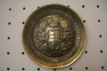

2007.02.20., hétfõ
tomcat
blog
droidzóna
levrov
Az imént fedeztem fel, hogy amikor feltépek egy öntapadó záras postai borítékot, ahogy széthúzom az öntapadós felületeket, a szétválás vonalán halvány, kékes derengés fut végig. Minél gyorsabban húzom, annál fényesebb. Több levél is érkezett ma, és mindegyik produkálta ezt. Ha lenne már új blogmotor, benne szavazógéppel, akkor az lenne a kérdés, hogy ez vajon sztatikus elektromosság, vagy így akarnak-e eltenni láb alól a kommunisták. Ufók nincsenek.
A mai napom a Magyarok Házában kezdõdött, a Gój Motorosok sajtótájékoztatóján. A fiúk tisztázni kívánták a sajtó elõtt azokat a vádakat, amelyek a közelmúltban a média, közelebbrõl bizonyos György Péter (igen! még él) részérõl érte õket.
Érkezés után: a gójok pakolásznak, a falon a jelszavukat hirdetõ molinó

A terem falán ilyen és ezekhez hasonló mûalkotások sorakoztak...

... e két mûvész jóvoltából. Érdemes megnézni alkotásaikat, a Magyarok Háza elsõ emeletén.
A hazai médiaviszonyokra jellemzõ módon egyetlenegy újságíró jelent meg, a kép jobb szélén látható, fiatal hölgy, az MTI képviseletében. Bónuszként azonban eljött Rácz Sándor, az 1956-os Országos Munkástanácsok Szövetsége elnöke, és a Magyarok Házában mûködõ Árpádhír Televízió munkatársa.
Pedig még büféasztal is volt!
A Gój Motorosok vezérkara. Mészáros Imre, az egyesület elnöke beszél, mellette Dr. Gaudi-Nagy Tamás elmélkedik a periratok fölött.
A sajttáj azzal kezdõdött, hogy némi köszöntés után Mészáros Imre lebaszta a sajtó meg nem jelent munkatársait, amiért nem jelentek meg. "Ennyit a jobboldali sajtóról", jegyezte meg keserûen, aztán a tárgyra tért. Elmondta, hogy 2006 október 23-a óta egymást érik a médiában azok a cikkek, amelyben õket jelölik meg különféle rendzavarások elkövetõiként. Példaként említette, hogy október 23-án szervezõk voltak a Corvin közi megemlékezésen, ám odafelé tartva egy forgalomirányító rendõr feltartóztatta õket. Engedélyük megtekintése, és az azt aláíró rendõrparancsnok felhívása után természetesen továbbengedte õket, ám a rendõrrel való egyeztetést több újságíró is lefényképezte, és késõbb úgy állították be, mintha rendzavaróként távolították volna el õket. Úgyszintén õket emlegették, amikor a Vaskefénél néhány motoros motorja zajával nyomta el Gyurcsány Ferenc beszédét, holott õk akkor szervezett program keretében valamennyien Mansfeld Péter szobránál voltak. "Persze, lehet ilyet is csinálni, csinálnánk is, de csakis szervezetten", tette hozzá Imre, néhány szóban vázolva a Gyurcsányhoz és a kormányhoz való viszonyukat.
Úgyszintén említésre került az Aktív címû tévémûsor szemét húzása is, akik ugyan korrekt anyagot forgattak le a Gój Motorosok, mint szervezet tevékenységérõl, épp a fenti vádak tisztázása céljából, ám az adásba került riportot ismét csak úgy vágták össze, mintha itt valami veszélyes, szélsõséges rendbontó banda garázdálkodna, akiket ideje mielõbb megfékezni. Ennek kapcsán az elnök kifejtette, hogy a Gój Motorosok nem szélsõséges szervezet, a "gój" megnevezést ne rajtuk tessék számon kérni, és mellesleg az árpádsávos zászló nem azonos a nyilasokéval.
Ezután került sor, mint mindennek a csimborasszója, György Péter kijelentéseinek elemzésére. Kiváló bolsevik holocaust-tagadónk ugyanis nem csak hogy nyilvánosan bûncselekményekkel hozta kapcsolatba a Gój Motorosok szervezetet, hanem "senkiknek" nevezte õket, külön kiemelve egyik tagjukat, a CBA áruházlánc egyik tulajdonosát. A motorosok polójára nem véletlenül van ráírva, hogy "ne piszkáljatok, sorstalanok", be is perelték langaléta házikedvencünket, aki pedig semmi szín alatt nem volt hajlandó visszavonni állítását. A mellettem ülõ fiatalember - egy másik szervezet tagja, nevezzük gój gyalogosnak - erre megjegyezte nekem, hogy amikor néhány éve Tamás Gáspár Miklós az õ szervezetükkel kapcsolatban engedett meg magának hasonló hangnemet, elkapták az utcán, odabilincselték egy villanyoszlophoz, és lehúzták a gatyáját. Ott állt egész éjjel meztelen valaggal, a kurvák halálra röhögték magukat, a rendõrök pedig csak reggel tudták kiszabadítani a neves filozófust. De hát ez a fiatalember egy szélsõséges szervezet tagja volt, a Gój Motorosok meg nem az.
A fiatalember elmesélt egy érdekes történetet a Munkásmozgalmi Panteon történetérõl is. Fiatalabbak már biztosan nem emlékeznek erre a remek építményre, amely a Felvonulási téren, a nemrég felavatott Vaskefe helyén állt. A Sztálin-szobor egykori talapzatából kialakított, vörösmárvány lapokkal burkolt emelvény tetejérõl integettek pártunk és államunk vezetõi a május elsejei felvonulásokon és díszszemléken. A rendszerváltás után egy darabig elhagyatottan állt, burkolatát leszerelték, végül elbontották az egészet. Azt azonban csak most tudtam meg, hogy hová tûntek a vörösmárvány lapok, és miért csúfoskodott ott a lemeztelenített betontömb több, mint egy évig. A márványlapokat ugyanis ez a fiatalember szerelte le néhány barátjával, gondolván, jó lesz az egy kõfaragó ismerõsüknek, néhány ezer forintért. Ezen kívül azonban megtalálták az épület lezárt bejáratát is, ahol annak idején Kádár elvtárs és egyéb jómadarak közlekedtek. Éppen volt náluk pajszer, így rövidesen bent voltak. Az egykori VIP várakozót érintetlenül találták, benne a bõrfotelekkel és más elegáns bútorokkal, a falon pedig egy nagyképernyõs Sony tévével, ami akkoriban igen nagy kincsnek számított. A bútorokat elvinni nem tudván inkább szétverték (az, vandalizmus), a tévét pedig kivitték az utcára, és 1500 forintért eladták az elsõ szembejövõ járókelõnek.
Hanem még itt sem volt vége a történetnek. Találtak ugyanis a padlón egy csapóajtót, ami egyáltalán nem volt lezárva. Felnyitották, de csak feketeséget láttak odalenn, és erõs huzatot éreztek. Lemásztak a vaslépcsõn, kezükben öngyújtókkal, és kitapogattak odalent, a falon egy nagy kapcsolót. Lesz, ami lesz, gondolták, és elfordították. Nagy csattanással óriási lámpák gyúltak fel, és egy jókora alagútban találták magukat, akkorában, hogy akár egy teherautó is kényelmesen elfért volna. Jó egy kilométerre elláttak benne, de ott már elkanyarodott.
Gyorsan kimásztak, hazaszaladtak biciklikért, és azokkal vágtak neki a rejtélyes alagútnak. Hosszan tekertek benne, rég lezárt és elfalazott vasajtók mellett haladva el, végül a Parlament mellett kötöttek ki, a szellõzõakna mélyén. Ha kimentek a Parlament mellé, ahol József Attila szobra üldögél, magatok is láthatjátok ezt a ráccsal lezárt szellõzõaknát, amit õk akkor alulról láttak. Annak idején Rákosi elvtárs közlekedhetett ezen az alagúton, s ez volt a magyarázata, hogyan lehetett az, hogy nagyobb állami ünnepségek idején percekkel azután, hogy a Sztálin-szobornál tiszteletét tette, máris a Parlamentben volt. Ez az alagút nyilván ma is megvan, de lejáratát leaszfaltozták, majd ráépítették a Vaskefét. Azon mindenesetre nem lennék meglepve, ha lenne összeköttetése a kisföldalatti alagútjával.
Míg e történet elhangzott, a motorosok vázolták, milyen pert fognak GyéPé nyakába akasztani, és megjegyezték, nem érdemes szívózni velük, mert nem hagyják magukat, s ezt ajánlják másoknak is. Ezután egy jótékonysági felhívásra került sor, s kérték a sajtó jelenlevõ egy szál munkatársát, írja meg. Természetesen nem írta meg, vagy legalábbis fõnöke, Vincze Mátyás elvtárs úgy döntött, ilyet az MTI nem közölhet. A lényeg: a szervezet jótékonysági gyûjtést kezdett egy hallássérült csíkszeredai kisfiú mûtéti költségeire, ami körülbelül 5 millió forintot jelent. Az akció felhívásának szövege itt olvasható. Nem elõször szerveznek egyébként ilyesmit a gójok, korábban több millió forintot szedtek össze az erdélyi árvízkárosultak javára is, és a kisfiú mellett az október 23-án kilõtt szemû Csorba Attilának is gyûjtenek. Március 15-én neki is lehet majd adakozni, és licitálni egy nemzeti zászlóra, melynek bevételét szintén a rendõrök által megvakított srác javára fordítják. Errõl a március 15-i felvonulásukat meghirdetõ közleményben írnak bõvebben.
- A Gój Motorosokról rosszat nem tudnak, jót meg nem akarnak írni - foglalta össze Imre a helyzetet. - Egyébként az Index nevû szélsõséges liberális portáltól életveszélyes fenyegetést is kaptunk.
- Ezt hogyan kell érteni - kérdeztem - maga a lap fenyegetett meg titeket, vagy a fórumon írta valaki?
- A fórumon - felelte Imre - de lenyomoztuk az IP címét, és kiderült, hogy az üzenetet az Index szerkesztõségébõl írták. Meglett a gép felhasználója is. Jeleztük ezt az Indexnek, akik ugyan törölték a fenyegetést a fórumról, de nem voltak hajlandóak elhatárolódni tõle.
- Lett ebbõl valamilyen ügy?
- Feljelentést tettünk, de a rendõrség elvetette. Késõbb azonban az ügyészség felülbírálta ezt, és hivatalból eljárást indított a fenyegetõ ellen. Úgy látszik, maradt még egy kis demokrácia ebben az országban.
- Hogyan sikerült kideríteni egy fórumozó IP címét?
- Ez maradjon a mi titkunk.
A sajttáj befejeztével a motorosok felhívták a figyelmet következõ, március 15-i felvonulásukra és országos akciójukra. Ennek felhívásszövege és programja itt olvasható.
A terem egyik ablakánál áll ez a hamisítatlan magyarnarancs-fa

A felemásra sikeredett sajttáj végén jobb híján a gójok burkolták be az érintetlenül maradt szendvicseket. Egy srác elvitt egy marékkal egy vak koldusnak, aki a Blahán szokott ülni, s akit mellesleg október 23-án szintén rommá vertek a rendõrök. Be is akarták vinni, de amikor rájöttek, hogy vak, egyszerûen kidobták a rabszállítóból. "Azért én ott leszek március 15-én is", kommentálta a vak, "inkább az én szememet lõjék ki, nekem úgyis mindegy..."
A sajttáj után átmentem az épület másik szárnyába, ahol az Árpádhír Világtelevízió interjút készített a Nyugati téri aláírásgyûjtõ brigád vezetõjével, Ungvári Béla barátommal és velem, annak alkalmából, hogy begyûjtöttük az ezredik aláírást, és még Gyurcsánynak is beszóltam a minap, tehát sztár vagyok. Az adás élõben ment, majd néhány nap múlva letölthetõ is lesz az arpadhir.hu oldalról.
Este megnéztem a Szabadság téren felállított, ideiglenes Ereklyés Országzászlót. A szovjet emlékmû romjai mellett szerénykedõ nemzeti zászló tövében fehér zsákocskákban hevernek a történelmi magyar vidékekrõl, köztük az elcsatolt területekrõl küldött talajminták. A zászló körül vagy egy tucat ember beszélgetett, nagy örömmel fogadtak. Láttam, hogy a tripla kordonnal körbezárt ruszki emlékmû tövében egy rakás koszorú hever.
- Még mindig járnak ide koszorúzni?
- Az hagyján - legyintett egy úr - láttad volna, mi volt itt. Álltak meghatottan vigyázzba a vén kommunisták, mire hirtelen felugrott az emlékmûre két macska, és elkezdtek hangosan vernyogva kefélni. Ezek meg csak álltak, vörösödtek, de egy se mert odamenni elzavarni õket, mi meg sírtunk a röhögéstõl.
- Másnap meg jött ide egy öregasszony - folytatta a társa - hogy mire gyûjtünk aláírást. Mondtam, hogy arra, hogy állítsák helyre a ruszki emlékmûvet. Ó, mindjárt kivirult a vén spiné, úgy kanyarította alá a nevét, mint a parancsolat, aztán puffogott egy sort, éltette Kádár elvtársat, és elégedetten elvonult. A hülye.
Egy asszony lépett oda, felemlítette Mokka-beli szereplésemet, valamint Gergényi Pétert.
- Macika. Így nevezi a barátnõje azt a mocskot.
- Kicsoda?
- Révész Renátának hívják. Egy kolléganõm lánya. Huszonnyolc éves. Az a Gergényi nõje.
- Õ hívja Macikának?
- Igen, egymás közt. Macikám így, Macikám úgy. Õ meg Nyuszikámnak a csajt. Ha dühös, akkor meg úgy, hogy Nyúl.
- És a csaj?
- Az olyankor azt mondja: "igenis, tábornokom!"
- Ki ez a Révész Renáta amúgy?
- Azt hiszem, a Szekeresnek valami sajtófõnöke, vagy sajtósa. Paudits Béláról is könyvet írt. Biztos az is megvolt neki, hehe.
- Biztos ronda zsidókat gyûjt.
- Hát, ja, de hogy mit akar ettõl a 67 éves vén fasztól? Úgyse veszi el sose, mert gój lány.
- A szivarja, az kell neki - nevetett egy férfi.
- Az hát - felelte az asszony. - Meg valami mûsort vezetett korábban az ATV-n, de onnan is kitúrták. A Havasnál járt iskolába, de nehezen fejezte be, mert nem volt nyelvvizsgája. Végül abból a cigány nyelvbõl, jaj, hogy is hívják...
- Lovari.
- Az, lovari. Abból vizsgázott le.
- Aha.
- Aztán ezzel a Macikával folyton Tunéziába járnak. A Gergényi állítólag ott élt öt évig, és mindig oda viszi ezt a nõt is. Most is eltûntek vagy tíz napra, amikor a tüntetések csillapodtak.
- Érdekes.
- Az lenne az érdekes, ha valaki beszólna a Gergényinek, hogy macikám! Na, azon felkapná a vizet! Mondja neki, hogy macikám, majd ha találkozik vele!
Majd mondom.
Eseménydús napom végén végre hazaérkeztem. Athina megkérdezte, ha baloldali ügynök lennék, elmondanám-e neki. Mondtam, hogy el, de erre kifejtette, hogy a konspirációnak épp az a lényege, hogy nem mondjuk el senkinek. Ezen veszekedtünk egy keveset, most pedig már lassan lefekszem. Ti is tegyetek így.